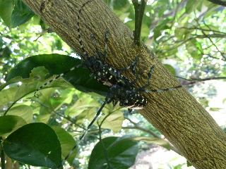
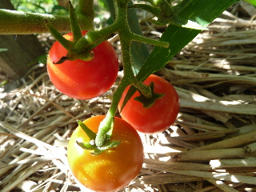
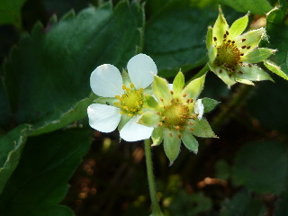
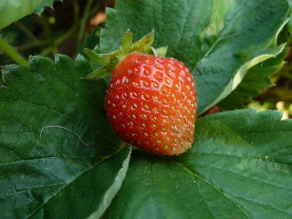

遊びで植物を育てよう
2014/07/26
カミキリって葉っぱ食べるんだ。
なんとなく甲虫って樹液吸ってるイメージでした。
野菜とか木の葉を食べるのもいますが、大きいサイズの甲虫はカブトムシみたいに樹液吸ってるって思っていたら、葉っぱ食べていました。

ゴマダラカミキリがつがいでいました。
たぶんメスのほうが、ガッツリ葉っぱを食べていました。
小さい虫みたいに、飛んだり落ちたりするわけでもなく、動かなかったので簡単に捕獲、撃退させてもらいました。
【7月TOP】
【日記TOP】
【園芸TOP】
2014/07/26
トマトが美味しそうです。
暑い日が続いています。
雨が降ってないので、トマトが割れないで育っています。

乾いてるところによく熟れた赤い実があると、とっても美味しそうです。
農薬を使ってないので、のどが乾いたらその場で食べながら収獲しています。
【7月TOP】
【日記TOP】
【園芸TOP】
2014/07/12
今年は異常気象かも？
今年はエルニーニョとか言って異常気象だなんて聞きますが、平年通りなんんじゃないの？なんて思っていました。
でも、今時苺の花が咲いてる。

これは異常気象だ。
四季採れの苺じゃないのに。何故？

その上に実まで出来ていました。
苺食べれるのはいいんですが、時季でないものが採れるのってちょっと異常なので怖いです。
【7月TOP】
【日記TOP】
【園芸TOP】
過去の日記
【2024年7月の日記】
【2023年7月の日記】
【2022年7月の日記】
【2021年7月の日記】
【2020年7月の日記】
【2019年7月の日記】
【2018年7月の日記】
【2017年7月の日記】
【2016年7月の日記】
【2015年7月の日記】
【2014年7月の日記】
【2013年7月の日記】
【2012年7月の日記】
【7月TOP】
【日記TOP】
【園芸TOP】
熱中症に注意しましょう。
【おいしいものを食べよう。】【たくさん寝よう。】
【ソロ活をしよう!】【季節感のあることをしよう。】【動画視聴はほどほどに。】【当サイトの全てのコンテンツは無断転載禁止です。】